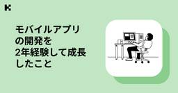
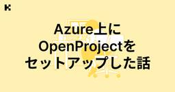

KENTEM TechBlog
https://tech.kentem.jp/
建設業のDXを実現するKENTEMの技術ブログです。
フィード

モバイルアプリの開発を2年経験して成長したこと
KENTEM TechBlog
この記事は、 テックブログ強化月間 リレーブログ企画2026 参加の記事です。 こんにちは、モバイルアプリの開発を2年ほど経験したエンジニアです。 普段はUnityを使った3Dの製品開発に携わっています。 3D開発では座標変換や物理演算といった計算処理が欠かせないのですが、開発を重ねるうちに、特にこの3Dに特化した計算処理に強くなったと感じるようになりました。 開発を通して特に3Dに特化した計算処理に強くなったと感じています。 本記事ではその背景と事例を紹介します。 以前の自分: UIは作れる、けど3D空間には抵抗がある… 事例1: 多角形の内外判定の処理 事例2: 面積計算 まとめ おわりに…
3日前
2年たって気づいた「プロダクトを生み出す難しさ」~PoC、製品開発、新規事業の企画を通して学んだこと~
KENTEM TechBlog
この記事は、 テックブログ強化月間 リレーブログ企画2026 参加の記事です。 はじめに こんにちは！3年目に突入したK・Mです！ 今回、リレーブログとして「〇年たって感じたこと」というテーマで記事を書くことになりました。 この記事では、1年目の10月からPoCが始まり、約1年半の歳月をかけてリリースにこぎつけた写管屋クラウド AIアシスト。この製品開発と、社内の新規事業企画を通して感じた、プロダクトを作り、世に出し、収益につなげる難しさについて書いていこうと思います！ これまでの経歴 PoC 1年目の9月ごろ、生成AIを使った新規プロダクトのメンバー募集がありました。 学生時代の研究で、橋梁…
4日前

Azure上にOpenProjectをセットアップした話
KENTEM TechBlog
この記事は、 テックブログ強化月間 リレーブログ企画2026 参加の記事です。 こんにちは、KENTEMのまつです。 WBSを作成するにあたり、ガントチャートで視覚的に共有・分析できるようにしたいなぁ、、となったため、OpenProjectをAzure上にセットアップして使ってみました。 OpenProjectのガントチャートはこんな感じのやつ 構成 月額コスト概算 セットアップ 前提条件 リソースグループ作成 VNet とサブネット作成 VNet 作成 基本タブ IP アドレス タブ サブネットを追加 App Service 用サブネットの委任設定 Ubuntu VM 作成 基本タブ ディス…
7日前

建設業のドメイン知識はどう身につける？未経験でもキャッチアップできるKENTEMの仕組み
KENTEM TechBlog
この記事は、 テックブログ強化月間 リレーブログ企画2026 参加の記事です。 「建設業のことを知らないのですが、やっていけますか？」 新卒・中途を問わず、採用面談の際によくいただく質問の一つです。 結論からお伝えすると、 KENTEMでは入社時点で建設業の知識がない方がほとんどであり、その後のキャッチアップを支える仕組みが整っているため、まったく問題ありません。 むしろ私たちは、「未経験からでも体系的にドメインを理解できること」を前提に、組織や学習の仕組みを設計しています。 本記事では、KENTEMがどのように建設業のドメイン知識習得を支えているのかをご紹介します。 動画コンテンツでイメージ…
8日前
航空業界の「ミスを責めないシステム」が理にかなっていて好き、という話。
KENTEM TechBlog
この記事は、 テックブログ強化月間 リレーブログ企画2026 参加の記事です。 こんにちは。マネージャー投稿枠の週ということで、私が個人的に好きで仕事上のマネジメントにも役立つ便利な考え方だと思っている航空業界の安全思想について、雑談がてら書いてみようと思います。 歴史を変えた1977年の大事故 フラットに「NO」と言える空気は、チームの安全装置 「誰が悪いか」ではなく「なぜ仕組みが防げなかったか」 インシデントから「再発防止策」を導くプロセスの設計 ミスを罪に問わない「非難しない文化（Just Culture）」 「人」ではなく「システム（構造）」に起因するアクションアイテムを作る 個人でミ…
9日前
“感謝”から始めたら、ふりかえりで意見が出るようになった話
KENTEM TechBlog
この記事は、 テックブログ強化月間 リレーブログ企画2026 参加の記事です。 こんにちは。 当社では毎年6月と12月に製品のリリースがあり、大きな山を越えたタイミングで、チームでふりかえりを行うのが恒例になっています。私たちのプロダクトチームでは、このふりかえりに KPT を使うことが多いです。 これまではいつも同じやり方で進めていたのですが、前回のふりかえりから、弊社テックブログで紹介されていた KPT フォーマット を導入してみました（→ 元記事）。そのまま使うのではなく、自分たちのチームに合わせてアレンジして回したので、その工夫と、やってみて分かったことを共有します。 どんなチームか …
10日前
チームワークで乗り越えろ！障害発生時の心構え
KENTEM TechBlog
この記事は、 テックブログ強化月間 リレーブログ企画2026 参加の記事です。 こんにちは！ 今期よりクラウド基盤チームの担当マネージャーになったTKです。 今期のチーム再編についてはこちらの記事をご覧ください。 プロダクト中心の開発組織へ──KENTEMの組織再編とマネージャー評価の変革 - KENTEM TechBlog 今回は、チーム再編して数カ月でぶち当たった大規模障害と、その経験を経て大切だと感じたことを記事にしてみました。 障害の概要 対応する上で心がけたこと 体制を整える 使えるものは何でも使え 腹を括る まとめ おわりに 障害の概要 今期、クラウドサービスの認証系に障害が発生し…
11日前
PRレビューはいつ見る？自分に最適な方法を見つけよう
KENTEM TechBlog
この記事は、 テックブログ強化月間 リレーブログ企画2026 参加の記事です。 こんにちは。普段フロントエンドで開発を行っている二年目のSです。 リレーブログ企画第三週は✨技術者のルーティン紹介✨ということで、今回はPull Request（以降PR）のレビューについて、自分なりの方法をご紹介できればなと思います。 また、PRレビューの速度について、Googleのドキュメントを見つけたので、そちらもご紹介します。 前提として レビューはすぐ見るべき？ 私はどうしているか おわりに 前提として 私のチームはフロントエンドが6人いて、PRをオープンすると、その中からランダムに必ず二人がレビュアーと…
14日前
エンジニアの1日
KENTEM TechBlog
この記事は、 テックブログ強化月間 リレーブログ企画2026 参加の記事です。 こんにちは。日本一マッチョな平凡エンジニアを目指している者です。 好きな言葉は「Bicep」と「ハードコーディング」（名前が強そうなので） 今回はエンジニアの一日と題して、普段何をしているのかを綴りました。 タイムスケジュール 各時間帯の詳しい過ごし方 おわりに タイムスケジュール 時間 主な業務 05:48 ～ 起床 & 準備 06:30 ～ ジム（一回目） 08:20 ～ 出社 08:30 ～ 朝礼 or 清掃 09:00 ～ 通達と当日のタスクを確認 09:30 ～ 朝会 10:00 ～ 通常業務（開発・コー…
18日前
読書メモを諦めずに済んだ話
KENTEM TechBlog
この記事は、 テックブログ強化月間 リレーブログ企画2026 参加の記事です。 AI活用の話でよく目にするのは、AIを使った開発であったり、AIフレンドリーなチーム構築であったり、あるいはAIの上手な使い方みたいなテクニックだ。 しかし、今回はそんな「AIに作業させる」先進的な話ではなく、「AIで作業を楽にしてもらった」という、いち利用者の視点で書いてみたい。 私の読書メモ問題 PCも、ノートも、iPadも、ダメだった PCで取ろうとした 手書きノートに移行 私の欠点は2つ Typeless をご存じだろうか スマホを立てて、マイクボタンを押すだけ ちょっと発展 量ではなく、質が変わった エピ…
21日前
「もしも、魔法の世界になったら」
KENTEM TechBlog
この記事は、 テックブログ強化月間 リレーブログ企画2026 参加の記事です。 こんにちは。ゴリラです。🦍 皆さんはドラえもん映画の「映画ドラえもん のび太の新魔界大冒険 〜7人の魔法使い〜」を見たことがありますか？公開から約20年経つようで、時の流れの早さを感じます。 久しぶりにこの映画を見て気になる部分があったので、記事にしました。 映画について 冒頭のあらすじ のび太君の想定外 魔法がうまく使えない 魔王と戦うことになった のび太君の問題点 問題点の解消 おわりに 映画について 冒頭のあらすじ のび太君、学校で怒られる アニメで魔法を使って宿題や片づけで楽をしているのを見る これだ～！ド…
22日前
AIに詰められるSKILL、grill-me を使ってみた
KENTEM TechBlog
この記事は、 テックブログ強化月間 リレーブログ企画2026 参加の記事です。 AIにコードを書かせていて、 「なんか思っていたのと違うな」と感じたことはありませんか？ このズレの原因の多くは伝達不足です。 しかし、具体的に指示を出しても、返ってくる物には多少のズレが出てしまいます。 そこで今回使ってみたのが 「grill-me」 実装に入る前に、AIの側から「この論点、どうする？」と質問攻めにしてくる、少し変わったSKILLです。 grill-me とは 実際に詰められてみた メリット・デメリット 感想 おわりに grill-me とは 普通のSKILLは「作業を代わりにやってくれる」方向の…
24日前
AI時代、我々は「当事者」であれ
KENTEM TechBlog
この記事は、 テックブログ強化月間 リレーブログ企画2026 参加の記事です。 AIの賢さ（でも責任を代替してくれない） AIは「判断力」を持っているのか AIと哲学の二刀流、それがBrian Cantwell Smith 判断力とは 人間を特別視しない まだ人間のやる仕事はある 表象 我々はモデル・表象を利用する システムは表象を扱う 第一世代のAI・第二世代のAI 第一世代のAI（GOFAI） 第二世代のAI（機械学習） 圧倒的な世界の豊かさにどう向き合うか 主体の有限性 世界という絶対の勝者 コミットメントと責任 「判断」という主体に本質的で、現状は人間にのみ可能な営み 「演算」という機…
25日前
不具合調査をもっとスムーズに！FE向けDevToolsガイド
KENTEM TechBlog
この記事は、 テックブログ強化月間 リレーブログ企画2026 参加の記事です。 フロントエンドの開発中、原因不明のバグに時間を費やした経験は誰しもあるのではないでしょうか。 console.log を仕込んでは確認し、また仕込んでは確認し……そんなループを繰り返していると、気づけばコードがデバッグ用のログだらけになってしまうことがあります。 ブラウザのDevToolsには、そういった作業を効率化する機能が数多く揃っています。 コードを一切書き換えずにログを仕込んだり、DOMの変更をリアルタイムで検知したり、変数の状態をまとめて監視したりと、使いこなすほどデバッグのスピードが上がります。 この記…
1ヶ月前
RSC時代にランタイムCSS-in-jsはなぜ厳しいのか
KENTEM TechBlog
この記事は、 テックブログ強化月間 リレーブログ企画2026 参加の記事です。 先日Panda CSSでデザインシステムのコンポーネントライブラリを作成した際の記事を投稿させていただきました。 そこでちょっと触れた、ランタイムで動作するCSS-in-JSはRSCとの噛み合わせがあまり良くないので、そもそもの選定候補から外したという話を書かせていただきました。 その話をちょっと深ぼろうと思います。 「styled-componentsはRSCと相性が悪い」という話はなんとなく聞いたことはあるけど、本当のところ何が問題なのか？ CSS-in-JSとは 1. Global Namespace（グロー…
1ヶ月前
Panda CSS🐼でコンポーネントライブラリを作る ── RSC時代の選定理由から実運用まで
KENTEM TechBlog
この記事は、 テックブログ強化月間 リレーブログ企画2026 参加の記事です。 2年ほど前、社内のデザインシステムを基にフロントエンド向けのコンポーネントライブラリを実装することになり、スタイリングライブラリとして最終的にPanda CSSを採用しました🐼 本記事では、Panda CSS（以下 Panda）の選定背景から、理解の前提となる周辺知識、既存プロジェクトへの導入のしやすさ、基本的な使い方、運用上の注意点等を順に紹介していきます。 Pandaを理解するための前提知識 PostCSS カスケードレイヤー cva (class-variance-authority) なぜPandaなのか🐼…
1ヶ月前
TanStack Queryを安全に書く—queryOptionsとskipToken—
KENTEM TechBlog
この記事は、 テックブログ強化月間 リレーブログ企画2026 参加の記事です。 こんにちは！フロントエンドエンジニアのY.Kです！ 今回はTanStack Query v5で使っている、「安全性を少し高めるための小ネタ」を2つ紹介します。 どれも今のコードを大きく変えずに試せるものばかりです。 queryOptions—定義を1箇所に集約する よくやる書き方 queryOptions でまとめる skipToken — queryFnに型安全性を よくやる書き方 skipTokenを返す コラム: queryFn に async は必須でない まとめ おわりに queryOptions—定義を…
1ヶ月前
【6月企画】KENTEMテックブログ、リレーブログ始めます！
KENTEM TechBlog
こんにちは！テックブログ編集部です。 6月はKENTEMの期末ということもあり、１年を締めくくるイベントとして、リレーブログを開催いたします！ 今回はその企画を紹介をいたしますので、ぜひ最後まで読んでいただけると嬉しいです。 リレーブログ企画とは？ テーマ紹介 第１週：フロントエンド 第２週：AI 第３週：技術者の１日紹介 第４週：マネージャー投稿枠 第５週：〇年経って感じたこと さいごに おわりに リレーブログ企画とは？ 今回のリレーブログ企画は、6月いっぱいかけて編集部が設定したお題に沿って、社内メンバーに記事を投稿していただく企画です。 編集部メンバーのリレーブログやってみたい！という熱…
1ヶ月前
Skillを作って気づいた、新人がAIとうまく付き合う方法 作ったフロントエンド設計用のSkillも公開！！
KENTEM TechBlog
こんにちは！フロントエンドエンジニアのY.Kです。 新卒で入社してから早くも1年が経ち、少し驚いています。 私はこの約半年間、AIエージェント（特にClaude）を活用してきました。その中で、フロントエンドの設計に特化したSkillを作成するうえで気づいたことを、これからまとめていこうと思います。 初めに 初めてのSkill作成 気づき Skillの改善 まとめ おわりに 初めに 弊社では今年初めごろから、Claudeに関する情報交換や活用が活発に行われてきました。 そこで私はフロントエンドの設計に興味があり、Claudeの活用方法を見出したいという思いもあったため、フロントエンドの設計を一緒…
1ヶ月前
KENTEMの社内サークルについて ～Claude Codeサークル編～
KENTEM TechBlog
こんにちは！KENTEMでBEを担当しているT.Hです！ 今回は自身と有志で立ち上げたClaude Codeサークルについてご紹介したいと思います。 KENTEMの社内サークルって？ なぜClaude Codeのサークルを立ち上げたのか ある日の共有例 スレッド内で引用しているTORICO様の記事はこちら Claude Codeサークルの取り組み サークルメンバーの声 おわりに KENTEMの社内サークルって？ KENTEMには社内サークルという制度があり、有志が集まり情報共有の場として活用しています。 立ち上げる条件は簡単！サークルを立ち上げるために募集をかけ、運営者を3人以上集めること！ …
2ヶ月前
アーキテクチャ、破壊してみた
KENTEM TechBlog
モジュールバランスを破壊する こんにちは、エンジニアのT.Mです。今日は私の代わりに、私の中のYAGNI🫠なペルソナが記事を書いてくれるそうです。 YAGNI🫠：「強固なアーキテクチャって、堅苦しいよね？なんだか冗長に見えるし、何の意味があって分かれているのか、理解しがたいことばっかり！業務では絶対やれないこと、ブログではやっちゃおう！！！」 なんだか、気分が悪くなってきました。しかし、ここは温かい目で見守ることにします。 YAGNIは「You Aren't Going to Need it」の略。 「機能は実際に必要となるまでは追加しないのがよい」ということです 堅苦しく、長いコード このイ…
2ヶ月前
.NET調査を振り返る パッケージ環境依存解決 NU1608
KENTEM TechBlog
こんにちは。モバイルエンジニアのT.Sです。 プロジェクトで.NET関連の調査をしました。その中でもNU1608という警告を解決するのに時間がかかったため、記録として共有しようと思います。 NuGet の警告（Fragment / Lifecycle） 内容 結論 原因 解決方法 まとめ おわりに NuGet の警告（Fragment / Lifecycle） 内容 以下のような警告が出ていました NU1608という、パッケージ参照に関するバージョンの競合が起きていたようです。 今回は、Lifecycle という UI 関連のパッケージで起きていました。 結論 最初はnugetパッケージ管理の…
2ヶ月前
「意味と操作」はコードの外にも広がる—オブザーバビリティとOTelの知識地図—
KENTEM TechBlog
ようやく春めいてきたかと思えば、急に冬が逆襲してくる寒暖差。 袖不足人間のエンジニアTです。 業務でAzure Application Insightsを使っていて、.NET 10へのアップデートに伴い「OpenTelemetry SDKへの移行」が話題に上がるようになりました。 learn.microsoft.com そこからOTelを調べ始めたのですが、調べていくうちにOTel単体の話ではなく、その考え方が普段のコード設計で大切にしている「意味と操作」という視点と深く繋がっていそうなことに興奮したため、勢いのまま書いた次第です。 opentelemetry.io この記事では、OTelが概…
2ヶ月前
git fetch -p でリモートの参照が消えないときの対処法
KENTEM TechBlog
こんにちは。フロントエンド担当です。最近ゴリラにハマっています。🦍<ウホ さて、今回は git fetch -p を実行しても古いリモートブランチの参照が消えずに困ったので、対処法を紹介します。 -p オプション 消えない 対処 おわりに -p オプション git fetchの -p (--prune) オプションは、リモートの情報をfetchすると同時に、リモートで削除されたブランチの参照をローカルからも削除するためのものです。 もう表示しなくて良いブランチがずっとローカルで表示されると邪魔になるので、それなりの頻度で実行しています。 消えない 入社してしばらくの間は -p での削除を知らず…
2ヶ月前
新人フロントエンドに向けたHTTPの基礎知識
KENTEM TechBlog
こんにちはフロントエンド担当のH.Rです！ 4月になり新入社員が入ってくる時期だと思います。 これからフロントエンド開発に携わる方が、まず最初にぶつかりやすい壁のひとつが「API（バックエンド）との通信」です。画面にデータを表示したり、入力されたデータを保存したりするためには、必ずバックエンドとやり取りをする必要があります。 このとき、「HTTPメソッド（どういうお願いをするか）」と「ステータスコード（結果の番号）」の基本を知っておくと、「なぜかデータが取れない！」「エラーが出たけど原因がわからない！」という時に、解決の糸口がすぐに見つかるようになります。 この記事では、フロントエンド初学者の…
3ヶ月前
TypeScriptで自作するMCPサーバー超入門：GitHub API連携編
KENTEM TechBlog
はじめに 前提条件 開発環境の準備 MCPサーバーの実装 サーバーの基本構成とツールの定義 動作確認 まとめ 終わりに はじめに こんにちは！フロントエンドエンジニアのH.Rです。 4月で早くも3年目。エンジニアとしての視座が変わってくる時期ですが、本当に月日が流れるのは早いものですね、、、 最近、AI界隈で大きな注目を集めているのが MCP（Model Context Protocol） だと思います。 ClaudeなどのAIツールに既存のサーバーを連携させるだけでも十分便利ですが、「AIがどうやって外部データにアクセスしているのか？」という裏側の仕組みを理解するには、自作してみるのが一番の…
3ヶ月前
【Unity】クリック時に特定のメソッドを実行する方法集めてみた
KENTEM TechBlog
Unityの学習を進めていくにつれて、ボタンをクリックした際に特定の処理を実行するためには、いろいろな方法があることを学びました。 本記事では、それらの方法のうち5つを紹介します。 AddListenerで登録する インスペクターから指定する IPointerClickHandlerを実装するような書き方にする Event Triggerを用いる Buttonクラスをオーバーライドする おわりに AddListenerで登録する Buttonコンポーネントを取得し、AddListenerメソッドで引数に指定されたメソッドを実行する方法です。 この書き方は新人研修で学んで以来よく使ってきたため、…
4ヶ月前
【編集後記】アドベントカレンダー2025を終えて
KENTEM TechBlog
こんにちは！テックブログ編集部です。 12月のエンジニア界隈の風物詩といえば、Advent Calendar ですね！私たち編集部にとって、2025年は新しいチャレンジをした年でした。 今更ですが、その振り返りを記事にしてみました。 Qiitaアドカレに初参戦 当選者その１：H.Mさん 当選者その２：T.Mさん 当選者その３：S.Mさん まとめ おわりに Qiitaアドカレに初参戦 これまで自社ブログ内での完結していたアドベントカレンダーですが、「より広くアウトプットを届けたい！」という思いから、今年はQiitaのOrganization枠でアドベントカレンダーを立てました。 qiita.co…
4ヶ月前
【Unity】スクロール機能に簡易的なスライダーを搭載する方法
KENTEM TechBlog
前回の記事ではuGUIのスクロール機能を拡張し、要素数が増減した時に幅などをソースコード上で計算するのではなくContent Size FitterやHorizontal Layout Groupの仕組みを説明しました。 スクロール機能は奥が深く、新卒で初めてUnityを扱った筆者にとって理解がしづらかった部分がたくさんあります。 本記事では前回の状態から簡易的なスライダー機能を搭載する方法について記載します。 下記では右方向のスライダー機能を紹介しますが、似た処理を行うことで左方向にも対応が可能です。 本記事の目標 実装 解説 Slideメソッド CalcPerStepメソッド まとめ おわ…
4ヶ月前
【Unity】要素数が可変のスクロール機能の作り方
KENTEM TechBlog
本記事ではUnityのスクロール機能を用い、要素数が変更する場合にも対応したGameObjectの配置とスクリプトについて紹介します。 本記事の目標 パネルの作成 スクリプトの作り方 Hierarchyの作り方 本作業を行うメリット おわりに 本記事の目標 Scroll ViewのContentの配下に要素を複数配置し、スクロールできる機能を作成していきます。 この際、要素数が任意の数になっても対応できるような仕組みになるようにしていきます。 パネルの作成 Hierarchy上で右クリックし「UI > Panel」の順に選択します。 PanelにLayout Elementをアタッチし、Pre…
4ヶ月前